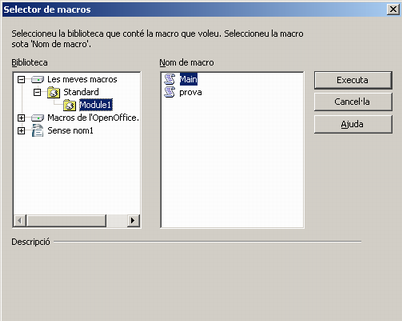

UF3. Processadors de text
Pràctica 7 - Exercici 1
Macros
Una macro és un programa en “miniatura” d'ordres i accions que es poden executar de manera automàtica. Per crear una macro anireu a l'opció de menú Eines | Macros | Enregistra la macro.
Crear una macro
Abans de registrar les macros s'han d'activar al menú d'Eines: Eines | Opcions | Libreoffice | Avançades | Activa l'enregistrament de macros. Els passos a seguir per crear i enregistrar una macro són els següents:
- Obriu el document per al qual desitgeu enregistrar la macro.
- Demaneu Eines | Macros | Enregistra la macro.
- Executeu les accions que desitgeu enregistrar en el document.
- Mentre s'estigui enregistrant la macro, serà visible la barra d'eines Enregistra la macro. Aquesta, en prémer sobre Atura l'enregistrament, permet parar la gravació i finalitzar la creació de la macro.
- Premeu Atura l'enregistrament de la finestra Enregistra la macro per a aturar la gravació.
- En fer-ho, la finestra de diàleg us permetrà decidir com desar la macro enregistrada i el seu nom.
- Cal escollir on voleu desar la macro en el quadre de llista Desa la macro a.
- Si es vol que es desi en una nova biblioteca o mòdul, cal fer clic en el botó Biblioteca nova o Pràctica nou i escriure un nom.
- Escriure un nom per a la nova macro en el quadre de text: Nom de la macro.
- Prémer el botó Desa.
Executar macros
Des del quadre de diàleg Eines | Macros | Executa una macro…, es poden executar les macros que s'han creat.  Per assignar una seqüència de comandaments a una combinació de tecles, cal seguir els passos següents:
- Per tal que les macros es puguin executar amb una combinació de tecles és necessari que la macro s'hagi desat a la biblioteca les meves macros.
- Un cop guardada la macro, cal demanar l'opció Eines | Personalitzar | Teclat.
- En el bloc Funcions/Categoria, desplegareu, fent clic al senyal [+], Macros de LibreOffice. D'aquest, desplegareu la carpeta User, a continuació la carpeta Standard i, finalment, seleccionareu Module 1. Al rectangle Funció, apareixerà la llista de les macros creades.
- Del quadre Funció, seleccionareu la macro a què es vol associar el conjunt de tecles que l'activaran.
- Del quadre Dreceres del teclat, buscareu una combinació que no estigui associada a cap acció del processador i la seleccionareu.
- Per últim, cal prémer el botó D'acord.
- Creeu una macro per convertir un text seleccionat a negreta i assigneu-li la combinació de tecles Ctrl+4.
- Obriu el document E53.odt.
- Demaneu Eines | Macros | enregistra la macro.
- Seleccioneu el text que voleu convertir en negreta (enunciat exercici, per exemple).
- Demaneu Format | Caràcter | Tipus de lletra/Tipografia | Negreta i premeu el botó d'acord.
- Feu clic a Atura l'enregistrament.
- Al requadre Nom de la macro, escriviu Negreta.
- Premeu el botó Desa.
- Assigneu l'execució de la macro a la pulsació de tecles Ctrl+4.
- Demaneu Eines | Personalitza… | (pestanya) Teclat.
- Al bloc Funcions / Categoria, desplegueu Macros de LibreOffice, User, Standard i, finalment, seleccioneu Module 1.
- Observeu que al bloc Funcions / Funció apareix el nom de la macro que havíem creat: Negreta. Seleccioneu-la.
- Del bloc Dreceres del teclat, cerqueu i seleccioneu Ctrl+4.
- Premeu el botó Modifica. Observeu el contingut que presenta ara el bloc Funcions / Tecles.
- Premeu el botó d'acord.
- Comproveu el correcte funcionament de la macro amb les tecles assignades.
- Seleccioneu el segon enunciat i premeu Ctrl+4.
- Desfeu la selecció fent clic en qualsevol indret del document i observeu els canvis en el text seleccionat.
- Deseu el document.

|
|

|
|